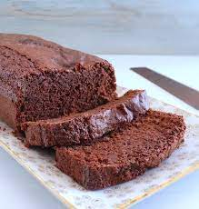

Bolo de chocolate com especiarias

Ingredientes
- 3 ovos
- 150 g de açúcar de coco
- 30 ml de azeite ou óleo de coco
- 90 g de farinha de aveia
- 80 g de farinha de trigo
- 30 g de cacau em pó
- 5 g de canela em pó
- 2 g de cravo em pó
- 2 g de noz-moscada em pó
- 50 ml de água
- 10 g de fermento químico
Modo de preparo
- Misturar os ovos com o açúcar e o azeite.
- Acrescentar as farinhas, o cacau e as especiarias, incorporasndo bem.
- Adicionar a água e por último o fermento.
- Assar em fôrma untada e "enfarinhada" com cacau, a 180º C por 30 a 35 minutos.
Observação
Depois de pronto, pode regar o bolo com infusão de maçã e canela.